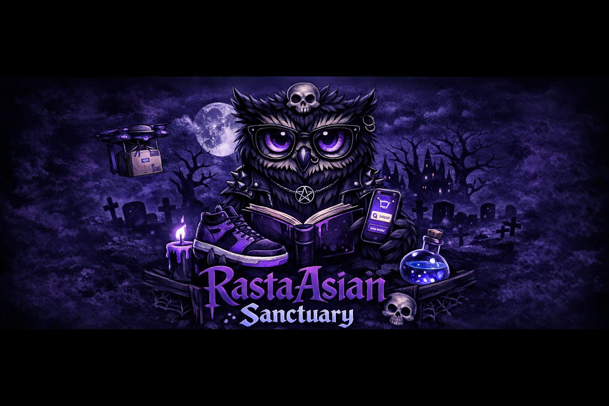

Hi, I'm RastaAsian
The story behind the Sanctuary.

Who I Am
I’m RastaAsian — a creator, gamer, streamer, and designer in the making. I navigate the world as a 🌙🦉 Neurodivergent (AuDHD) Night Owl with Beautiful Princess Disorder (BPD), and I share that openly because it shapes my creativity, my humor, my resilience, and the way I connect with people. The Sanctuary exists because I needed a place where I could be fully myself — and now it’s a place where others can too.
What I Bring
My content blends chaos, comfort, and charisma. Whether I’m clutching in shooters, vibing in RPGs, or exploring cozy indies, I bring a mix of humor, authenticity, and late‑night energy that feels like hanging out with a friend — not watching a performance. I’m also building my path as a hybrid UX/UI Designer & Front‑End Developer, bringing design thinking and creativity into everything I do.
The Sanctuary
The Sanctuary is more than a stream — it’s a vibe, a refuge, a late‑night digital living room. It’s home to the Night Owls: neurodivergent minds, gamers, creatives, and anyone who just wants a space where they can breathe, laugh, and exist without pressure. No judgment. No masks. Just connection, chaos, and community.
My Mission
My mission is to grow, learn, and build a community where people feel seen, supported, and safe. Streaming is storytelling — it’s shared experiences, emotional honesty, and creating a space where people can show up exactly as they are. I’m passionate about mental health advocacy and committed to using my voice, my creativity, and my design journey to make a positive impact both online and in the digital world.